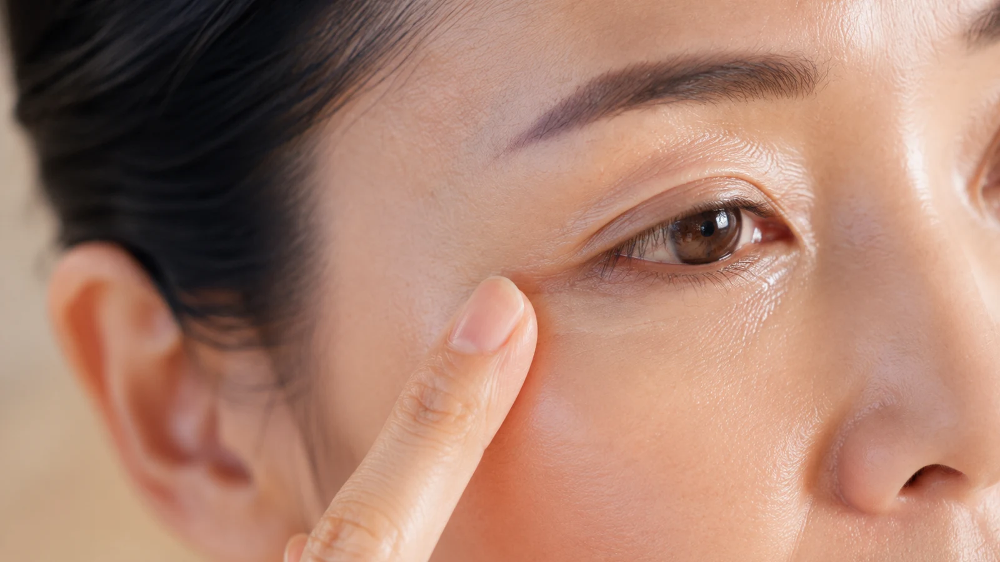

The Bojin Journal · Eyes
Hollow, Sunken Under-Eyes? It's Not Just Tiredness

"I've slept eight hours and I still look exhausted," a student told me, tilting her face to the light so I could see the little grooves under her eyes. That sunken shadow between the lower lid and the cheek, the tear trough, gets blamed on tiredness for years before women realize sleep was never going to fix it. It isn't a bag, it isn't quite a dark circle, and it's made of three separate layers. Only two of them are yours to soften by hand.
Three layers make one shadow
The shadow you see is really three things stacked, and pulling them apart is what turns a hopeless-looking hollow into a manageable one.
A tear trough shadow is a hollow plus thin skin plus pooled fluid. The hollow is a groove where the cheek's cushion sits lower than it used to, and hands can't fill it. The thin skin lets shadow and shadow-blue show through, and the pooled fluid puffs above the groove so it looks deeper by contrast. Those last two, you can genuinely ease.

The hollow. As the cushion of the upper cheek settles lower, a groove opens between the lid and the cheek. This is the structural layer, and it's the one no gentle method refills.
The thin skin. Under-eye skin is the thinnest on your body, so whatever sits beneath it, shadow, a hint of blue, shows straight through, and dryness makes it look more sunken still.
The pooled fluid. Fluid settles under the eye overnight and puffs slightly above the groove. A little puff above a hollow deepens the shadow by contrast, the same way a ridge makes a valley look lower.
What you can soften, honestly
Straight with you before the steps: you cannot fill the hollow with your hands, and the deepest, most structural troughs have the least to gain. What a gentle release reaches is the other two layers. It moves the pooled fluid so no little puff is deepening the groove, and it supports circulation and suppleness in the thin skin so it casts less shadow and reads less sunken. The shadow softens; the hollow stays. That's an honest, worthwhile difference, and it's gentle and temporary, built with consistency.
A 5-minute under-eye reset
This is the most delicate skin you own, so use a fingertip only, plenty of eye cream or oil for glide, and the lightest touch you have.

Moisten first
Press a little eye cream or a drop of oil gently into the whole under-eye until it looks satiny. Never work this skin dry.
Sweep fluid outward
With one fingertip, make slow, feather-light passes from the inner corner outward toward the temple, encouraging any pooled fluid to move away from the groove.
Ease the puff above the trough
A few gentle passes along the top of the cheekbone, just below the groove, settling the little ridge that deepens the shadow by contrast.
Warm the temple and drain down
Light passes out to the temple and down toward the ear, giving the fluid you moved a route away from the eye.
Press and rest
Finish with a warm fingertip pressed gently under the eye for a breath. Warmth and stillness do more for this skin than any stroking.
Two honest notes on lighting and choices
First, remember a tear trough is a shadow, and shadows are made by light. Harsh overhead light drops straight into the groove, which is why the office bathroom mirror is the cruelest one you'll meet all day. You're not as hollow as that mirror insists. Second, if the hollow itself bothers you, filler addresses that layer directly and is a decision for a qualified professional, since this area is delicate. Trying the gentle route first costs nothing and softens the other two layers; it's a sensible companion to that conversation, not a replacement for it.
Sleep was never going to fill a hollow, and now you know why. You can't refill the groove by hand, but soften the two layers stacked on top of it and your under-eyes stop announcing a tiredness you don't actually feel.
Quick answers
Are tear troughs the same as under-eye bags?
No, and they're often opposites. A bag is a puff that sits out; a tear trough is a groove that sinks in, the shadowed hollow between the lower lid and the cheek. Some faces have both, a puff above a hollow, which deepens the shadow. Knowing which one you're looking at changes what actually helps.
Can a gentle release fill a hollow?
It can't add volume to a true hollow, and no hands-on habit does. What it can do is ease two of the three things creating the shadow: it moves pooled fluid so a puff isn't deepening the groove by contrast, and it supports circulation and suppleness in the thin skin so it casts less shadow. Softer shadow, not a filled hollow.
Why do I look worse in some lighting?
A tear trough is a shadow, and shadows are made by light. Overhead light drops straight into the groove and darkens it, which is why bathroom and elevator mirrors are so unkind. It's a real hollow, but harsh light exaggerates it, so don't judge your under-eyes by the worst mirror in the building.
Would filler be the only real fix?
Filler addresses the hollow itself directly, which a gentle release can't, and it's a decision for a qualified professional since this is a delicate area. That doesn't make the gentle route pointless: easing the fluid and supporting the skin softens the shadow, costs nothing to try, and is a sensible first or alongside step, not a replacement for that conversation.
See the one-finger touch this needs
Under-eye skin punishes anything heavier than a single light fingertip. My free 3-minute video shows exactly how gentle this area wants you to be.
Watch the free 3-min videoYu-Ting Lan is a Taiwan-based international bojin instructor and the founder of Héhé Studio. She has taught her bojin method to more than a thousand students, from complete beginners to grandmothers, across Taiwan, Hong Kong, and Malaysia.